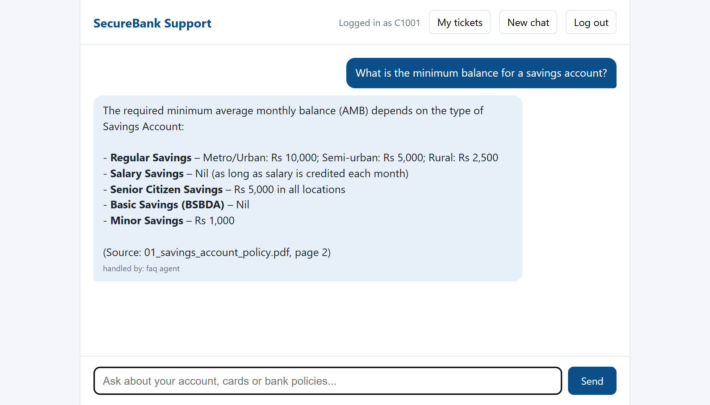

It answers policy questions from the bank's own documents, shows a customer their balance and transactions, freezes or blocks cards with a confirmation step, and hands serious cases to a human.
Answers stream in word by word, a page refresh keeps the conversation, and customers can list their own support tickets.

Keyword search and a bigger embedding model did not help on this corpus, so they are not in the code. A cross-encoder re-ranker and a document + section label on every chunk did.
The guardrail hides sensitive numbers before a message reaches any model or is saved. Each agent has its own prompt and only the tools it needs; money and card actions happen in plain code behind those tools.
Card blocking uses LangGraph's interrupt(): the graph pauses, the page shows Yes / No, and /approve resumes it. Fraud and hacked-account reports create a high-priority ticket.
Searches and re-ranks the six policy PDFs and cites file and page.
Balance and transactions from the database through tools, never from model memory.
Freeze, block or dispute a card, always after an explicit Yes.
Creates a high-priority ticket and gives safety advice.